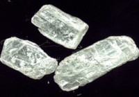
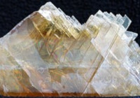
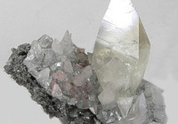
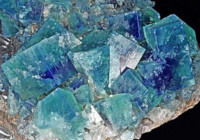
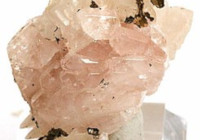
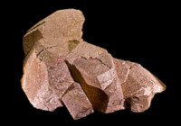
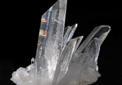
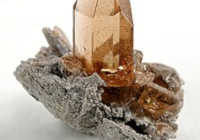
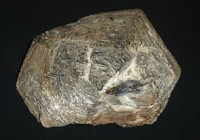
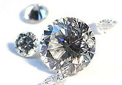

| Dureza | Mineral | Foto | Resistencia |
|---|---|---|---|
| 1 | Talco |  | Se puede rayar fácilmente con la uña |
| 2 | Yeso |  | Se puede rayar con la uña con más dificultad |
| 3 | Calcita |  | Se puede rayar con una moneda de cobre |
| 4 | Fluorita |  | Se puede rayar con un cuchillo de acero |
| 5 | Apatito |  | Se puede rayar difícilmente con un cuchillo |
| 6 | Ortosa |  | Se puede rayar con una lija para el acero |
| 7 | Cuarzo |  | Raya el vidrio |
| 8 | Topacio |  | Rayado por herramientas de carburo de wolframio |
| 9 | Corindón |  | Rayado por herramientas de carburo de silicio |
| 10 | Diamante |  | El material más duro en esta escala (rayado por otro diamante) |